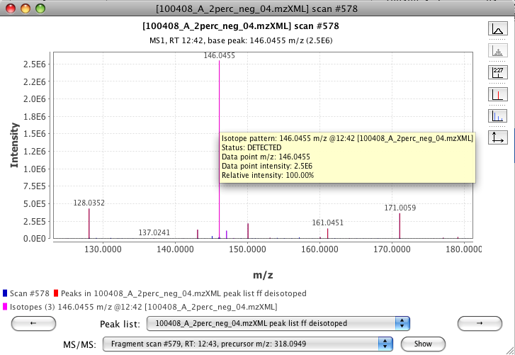

This module attepts to find those peaks in a peak list, which form an isotope pattern. When isotope pattern is found, the information about the charge and isotope ratios is saved, and additional isotopic peaks are removed from the peak list. Only the highest isotope is kept.
Note that deisotoping is performed after Chromatogram builder and Deconvolution. Therefore, MZmine does not search for isotopic peaks in individual scans, but instead tries to identify those peak list entries, which form an isotope pattern together.
Peaks in the peak list are processed in the order of decreasing height. For each peak, MZmine tries to find the most appropriate charge state by comparing the number of identified isotopes for each possible charge. For each charge state, peaks which fit the m/z and RT distance limits are considered as isotopes. The charge state with the highest number of identified isotopes is selected, and the isotope pattern is generated.
The difference between neighboring isotopes is a single neutron. The exact mass of 1 neutron is 1.008665 Da, but part of this mass is consumed as a binding energy to other nucleons. This small difference may become significant with high-resolution MS data. The actual mass difference between isotopes depends on the chemical formula of the molecule. Since MZmine does not know the formula at the time of deisotoping, it assumes the default distance of ~1.0033 Da, with user-defined tolerance (the m/z tolerance parameter).
Detected charge states and isotope patterns can be observed in the Peak list table and Spectra visualizer.
